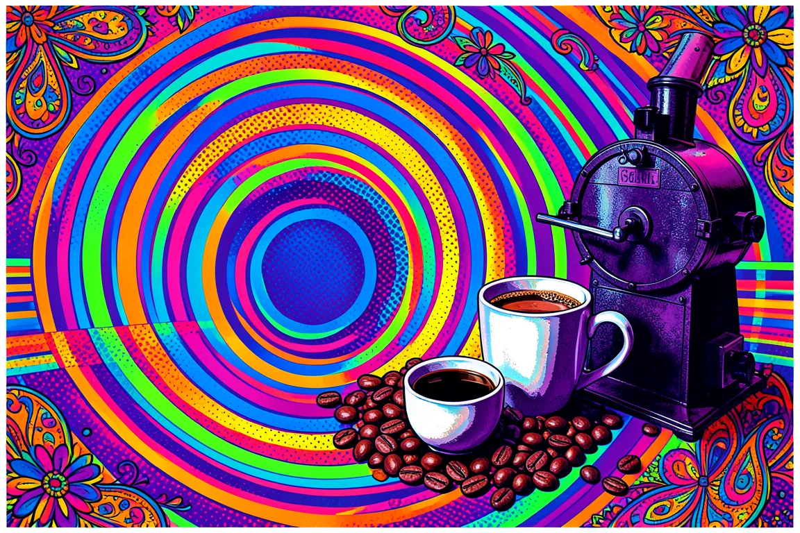

Вибрирующие дополнительные цвета, «тающие» рисованные буквы и симметричные завихрения, заполняющие весь лист. Вышла из сан-францисских концертных плакатов 1966–1968 годов и сознательно отвергала порядок швейцарского модернизма.

Главная идея
Дизайн должен менять восприятие, а страница, которая вибрирует, течёт и сопротивляется лёгкому чтению, погружает зрителя в расширенное состояние ума.
Принципы дизайна
Заполняйте 90% листа и больше узором, цветом или буквами и не оставляйте нейтральных полей.
Сочетайте дополнительные цвета равной светлоты, вроде оранжевого с синим и пурпурного с зелёным, чтобы края вибрировали.
Рисуйте буквы от руки под форму: гните базовые линии, плавьте очертания и сводите просветы между буквами к 0 и меньше.
Стройте композицию на кривых и спиралях, с зеркальной или радиальной симметрией вокруг одного фокуса.
Берите три–пять насыщенных оттенков в одной работе и сдвигайте оттенок в градиентах по листу.
Обводите формы тёмной линией 2–4px и повторяйте контуры в 3–6 концентрических колец.
Заимствуйте из ар-нуво, викторианских плакатов и оп-арта и искажайте заимствованное.
Антипаттерны
Текст с выключкой влево и рваным правым краем на видимой модульной сетке
Нейтральные серые или белые поля, обрамляющие содержимое
Один неогротеск обычного начертания
Приглушённые земляные палитры с низкой насыщенностью
Прямые горизонтальные базовые линии у каждой строки заголовка
Фотореализм без искажения или сдвига цвета
Широкое пустое пространство как главный композиционный элемент
Палитра
Кислотный оранжевый #FF6A00 основное поле
Электрический синий #1B3BFF дополнение к оранжевому